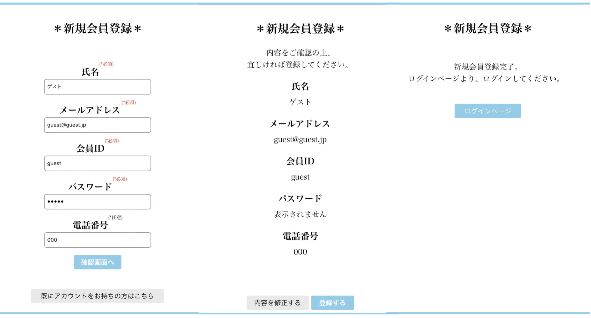
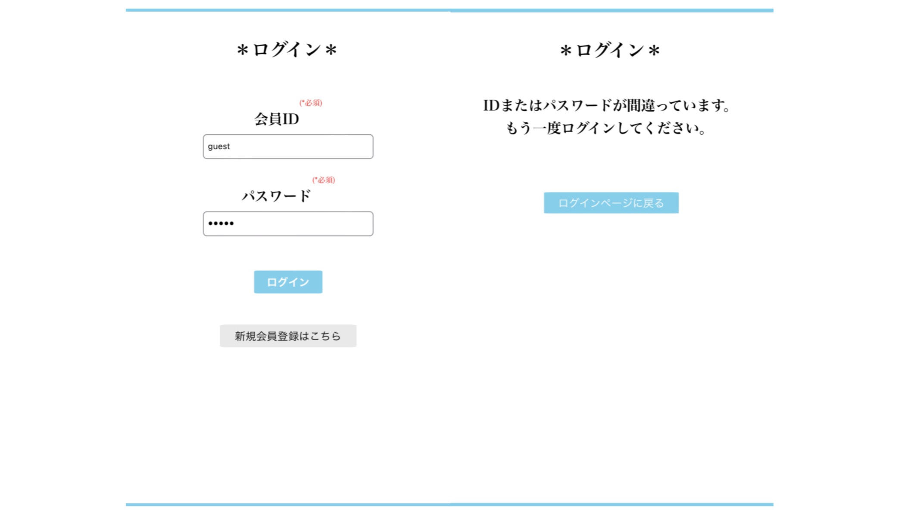
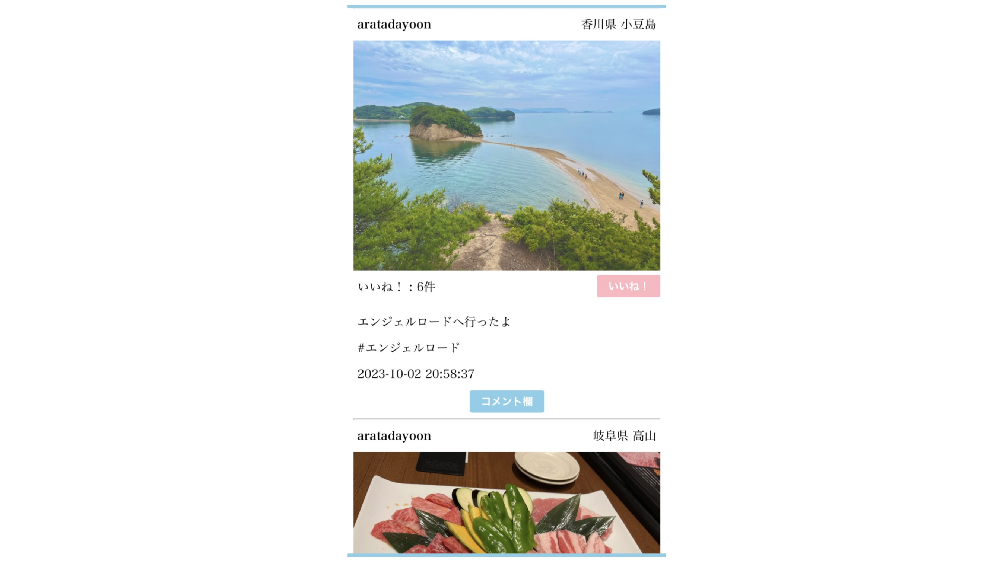
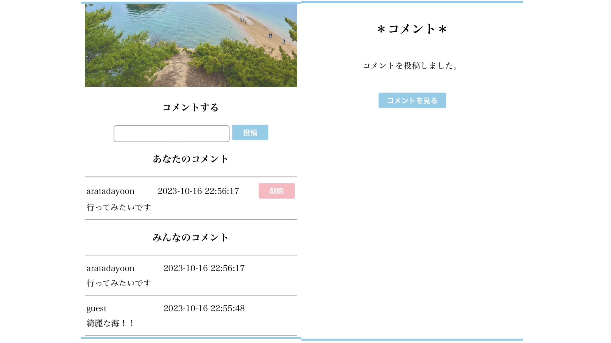
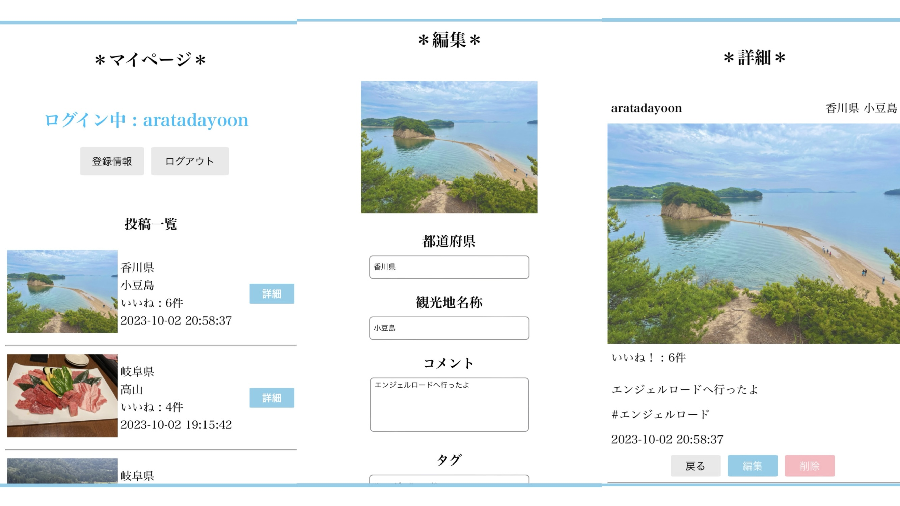
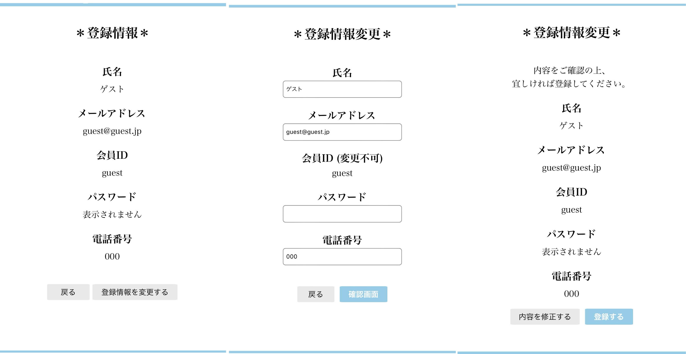
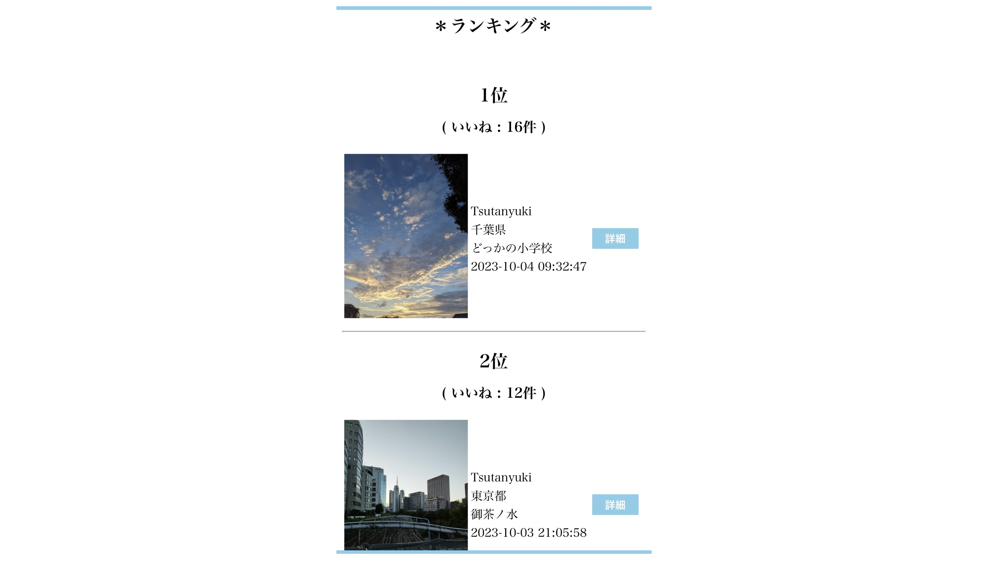
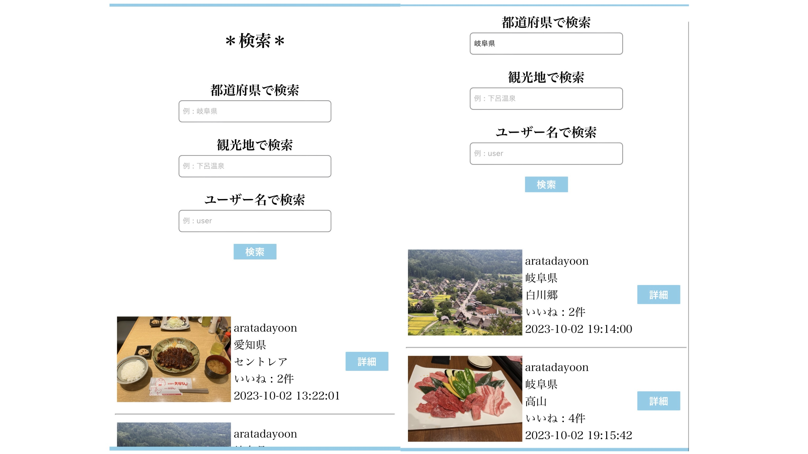
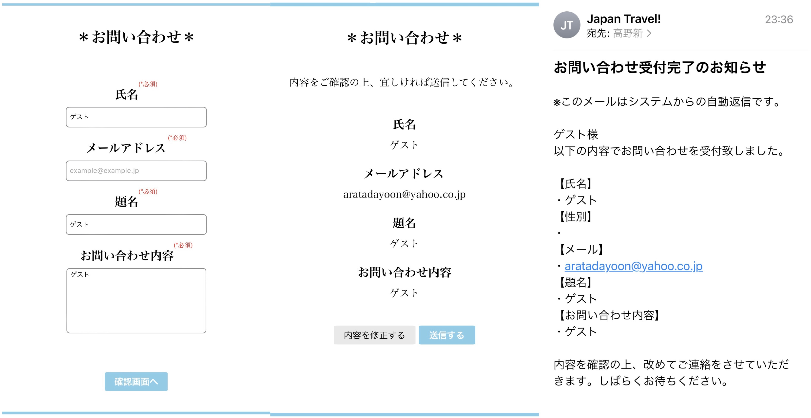

※会員ID : guest / パスワード : guest でログインすることも可能です。
私は旅行をすることが好きなので、普段旅行先を考えたりする際にはInstagramを活用します。
しかし、Instagramには少し不満がありました。
私は旅行先の魅力などについて知りたいのですが、Instagramでは自撮り写真や普通の料理の写真が多く存在し、目的の写真を見つけるには少々時間がかかります。
そこで私は旅行先の風景やグルメのみを共有するアプリケーションがあれば、簡単かつ素早く情報収集が出来るのではないかと考えました。
このような、簡単に旅行先に関する情報収集がしたい , 旅行先に関する写真のみを見たい。という目的を達成するために Travel Japan ! の開発に至りました。
・Xserverに何度もファイル転送しながら、アプリ開発しました。
ログインしていない場合、ゲストユーザーとしてアプリケーションを使用することが出来ます。
ゲストユーザーは利用できる機能に制限があり、最新の投稿機能 , お問い合わせ機能 , ログイン / 新規会員登録機能 のみとなっています。
初めに氏名 , メールアドレス , 会員ID(ユーザーが決定) , パスワード , 電話番号(任意)を入力します。
確認画面で入力内容を確認し、登録するボタンを押すことで会員登録が完了します。
新規会員登録で登録した会員IDとパスワードを正しく入力し、ログインボタンを押すことで会員専用ページへ遷移します。
会員IDまたはパスワードを誤入力した場合、ログインページへ遷移させられます。
会員専用ページではゲストページとは異なり、新たな機能が利用可能になります。(後述)
ログインすると最初に遷移するページ(ホームページ)です。
ここでは全会員ユーザーが投稿した内容が、最新順に表示されます。
また、それぞれの投稿にいいね , コメントをすることが可能です。(後述)
それぞれの投稿に、いいねボタンが設置されています。
ユーザーがいいねボタンを押すことで、ボタン左のいいねカウントが1増えます。
それぞれの投稿にはコメントボタンが設置されています。
コメントボタンを押すことで、その投稿のコメント欄へ遷移します。
コメント欄では、他ユーザーの投稿したコメントを確認したり、自身がコメントを残すことも出来ます。
※拘った点として、自身のコメントのみ削除できる機能を開発しました。
ここではログインしているユーザー自身の投稿が一覧表示されます。
詳細ボタンを押すことで、それぞれの投稿の詳細ページへ遷移し、投稿の削除や投稿内容の編集(写真以外)をすることが出来ます。
マイページから、個人情報の登録内容の確認や、変更(ID以外)をすることが出来ます。
マイページでログアウトボタンを押し、警告を承認することでログアウトします。
ログアウトすると、ゲストユーザーとしてゲストページへ遷移します。
ここでは全ユーザーの投稿が、いいねの多い順に一覧表示されます。
いいね機能 , コメント機能 も利用することが出来ます。
ここでは都道府県か観光地名称、またはユーザー名で検索をすることが出来ます。
例えば都道府県に「岐阜県」と入力し、検索ボタンを押すことで全ユーザーの「岐阜県」の投稿のみが一覧表示されます。
ここでは、ユーザーがアプリ管理者へお問い合わせをすることが出来ます。
入力フォームで氏名 , メールアドレス , 題名 , お問い合わせ内容を入力し、確認画面で確認後、送信ボタンを押すことでお問い合わせが完了します。
お問い合わせが完了すると、管理者とユーザーそれぞれにお問い合わせ内容が記載されたメールが届きます。
プライバシーポリシーを記載しているページです。
約10日かかりました。
大学の夏休み期間だったので、毎日暇さえあれば開発に取り組んでいました。
Travel Japan !の開発を始めたのは9月ですが、7・8月に簡単なアプリケーションを練習として開発していたこともあり、慣れていたせいか、効率よく開発することが出来ました。
Travel Japan ! ですが、まだまだ問題点があります。
例にあげると、いいねボタンを押した際にページのトップへ戻ってしまうことや、いいねボタンが何度も押せてしまうという問題点です。
MySQLについて更に学習を進め、1つずつ問題に対処していきたいと考えています。
またお気に入り機能など、新しい機能も今後実装していきたいと考えています。
ご覧いただきありがとうございました。